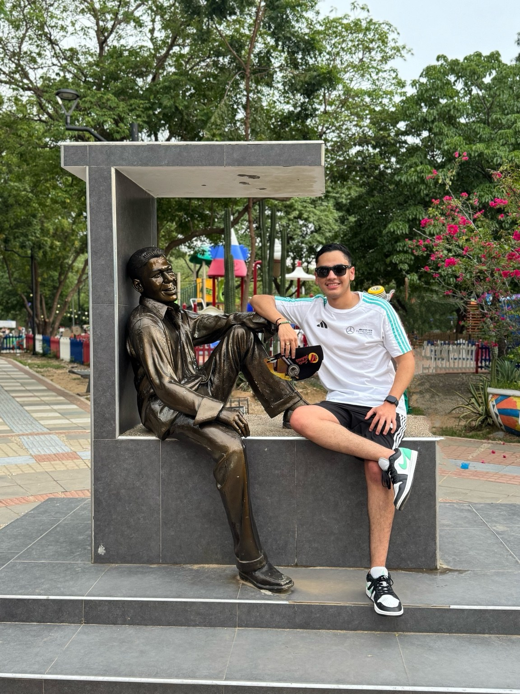
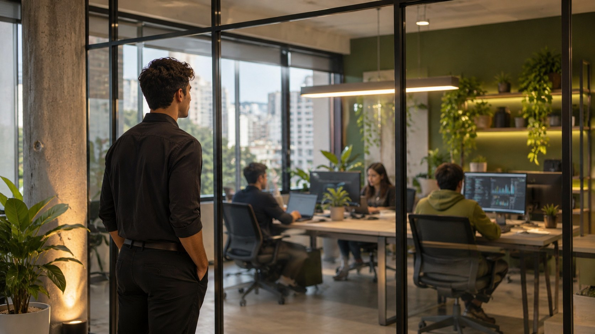

Curioso
Siempre busco aprender algo nuevo, entender cómo funcionan las cosas y descubrir otras perspectivas.
ORIGEN · EXPERIENCIAS · PROPÓSITO
Del Huila a Bogotá, sigo construyendo mi camino, aprendiendo de cada experiencia y trabajando por la persona que quiero llegar a ser.
Conoce mi historia ↓
Soy Francisco, oriundo del hermoso departamento del Huila. Desde hace un año resido en Bogotá, una etapa que me ha permitido descubrir nuevas experiencias y continuar construyendo mi futuro.
Me considero una persona tranquila, curiosa e independiente. Me gusta analizar las situaciones, buscar alternativas y tomar decisiones de manera consciente. Creo que cada experiencia, incluso las más difíciles, puede convertirse en una oportunidad para aprender.
Soy alguien que lucha por sus sueños y aspiraciones sin rendirse fácilmente. Me motiva avanzar, encontrar nuevas posibilidades y mantenerme en movimiento sin perder la calma ni olvidar lo que realmente importa.
Más que etiquetas, son cualidades que intento llevar conmigo en cada decisión y en cada nuevo reto.
Siempre busco aprender algo nuevo, entender cómo funcionan las cosas y descubrir otras perspectivas.
Tengo aspiraciones grandes y quiero convertirlas en objetivos reales mediante el trabajo constante.
Me gusta encontrar alternativas, asumir mis decisiones y aprender a resolver los retos por mi cuenta.
Prefiero mantener la calma, analizar las situaciones y actuar con conciencia antes de decidir.
Entiendo que los resultados toman tiempo y que avanzar requiere constancia, incluso en días difíciles.
Para mí, crecer no consiste únicamente en alcanzar metas. También significa disfrutar las experiencias, compartir momentos y valorar a las personas que hacen parte de mi vida.

Consciente de dónde vengo, agradecido por el presente y motivado por todo lo que todavía quiero alcanzar.
Francisco Jose CastroConoce mi recorrido académico, mis aprendizajes y los conocimientos que estoy desarrollando.